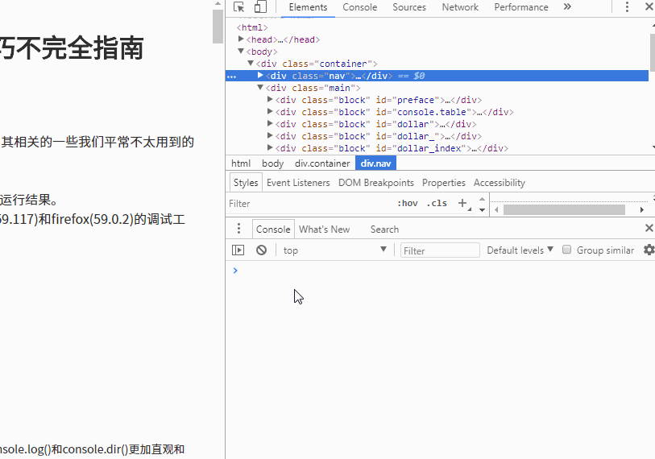

前端控制台使用小技巧不完全指南
分享人： Z77前言：
今天我要分享的是关于前端js调试的方法，和与其相关的一些我们平常不太用到的东西。
既然上次用的是网页实现，
以下带run的代码想要运行，请打开控制台查看运行结果。
本次测试只在我们常常使用的chrome(66.0.3359.117)和firefox(59.0.2)的调试工具下调试，文中也会对比一下这两个的不同。
console
console这个函数大家应该是司空见惯了吧，在调试js的时候多多少少大家都会用到console.log。
其实console这个对象内还有很多可以使用的方法，比如console.info、console.debug、console.warn、console.dir等，这里我就挑几个我觉得实际上用处比较大的方法的但是比较不被我们熟知的讲一讲。
console.error()
表示出错，和console.log方法一样也是输出输入的信息，同时会显示错误发生的堆栈。语法
console.error(string...)
string: 输入的字符串，也可以是类似c语言输出一样的('hellow word! %s', '小明');
console.warn和console.error类似，也会显示实现的堆栈，在我看来只有颜色和警告性强度的差别。虽然说是表示出错，控制台输出的样子和平常js出错相似，但是并不会像真的出错那样堵塞接下来的js。
var test = {a: function() {console.error('wrong!!');}};
test.a();
console.warn('哟哟哟');
console.table()
该方法会在控制台将object转为表格显示, 相较于平常的console.log()和console.dir()更加直观和容易查找出问题，而且还可以排序，对于找一个特殊值（最大最小值或者空值）我觉得还是挺好用的。语法
console.table(obj)
obj: 指定对象
var people = [
{姓名: 'zqq', 年龄: 19, 职位: '前端开发'},
{姓名: 'hxl', 年龄: 18, 职位: '后台开发'},
{姓名: 'cd', 年龄: 17, 职位: 'UI'}
];
console.table(people);
但素如果你的对象中还保留着对象的话, 控制台并不会全部输出。
不同的浏览器有不同的表现，firefox下对象内的对象是像console.log一样是折叠状态。
而在chrome下，对象就会想我们平常alert一样只会告诉你这里有个对象，并不能详细查看。
叮~firefox好感度+2。但缺点是都不是很直观。
var people = [
{姓名: 'zqq', 年龄: 19, 职位: '前端开发', 兴趣爱好: ['学习', '刻苦学习', '拼命学习'], 身体分数: {头: 60, 身: 40}},
{姓名: 'hxl', 年龄: 18, 职位: '后台开发', 兴趣爱好: ['吃', '玩'], 身体分数: {头: 90, 身: 85}},
{姓名: 'cd', 年龄: 17, 职位: 'UI', 兴趣爱好: ['游', '抹茶']}
];
console.table(people);
console.table也接受第二个参数，当第二个参数为是string类型时
console.table(people, '姓名');
若要显示多个参数则第二个参数可以是数组形式
console.table(people, ['姓名', '年龄']);
浏览器兼容性
| Chrome | Firefox | IE | Opera | Safari |
|---|---|---|---|---|
| Yes | 34.0 | 未实现 | Yes | Yes |
$
看到$符号前端第一肯定是想到jQuery, 后台的盆友大概第一反应是php变量吧, nonono~,这边的$呢，指的是控制台中调试的方法名
由于控制台命令只能在控制台中环境中执行，因为他不依附于任何全局变量比如window，所以其实在JS代码里是访问不了这系列方法的， 所以以下的将用截图、gif或者直接表明运行结果来表示。
$_
主要功能： 返回控制台上次运行的结果值，若无结果则返回undefined。
1110 + 1111;
>>>2221;
$_;
>>>2221;
$_/10;
>>>222.1;
$0-$4
主要功能： 返回最近5个你选择过的DOM节点，若无选择节点则返回undefined。这个算是我最近了解到觉得对我来说超级有用的方法了！之前如果我想要对一个并不特殊的节点操作，都是在Elements属性上给这个节点加一个id再用选择器去选择的。有了这个方法就真的方便了好多！（期待的搓手手
使用方法然后在f12弹出来的DOM结点树上面点击节点,$+n会返回倒数第n+1次点的DOM节点，比如$0就是指倒数1次点击的dom,$1就是倒数第2次选择的DOM节点,以此类推，最多储存5个，即不管选择过多少次$5=tan 90°！
超！喜！欢！
chrome下我尝试是可以保存5个，但是在firefox下，我发现最多保存一个，不过应该也够了。
getEventListeners()
主要功能： 实参节点上注册的所有事件，每个事件对应一个数组，返回由这些数组组成的对象。语法
getEventListeners(target)
target: 目标节点
这个方法和上面讲的$0-$4简直是佳偶天成啊！！想一想你在dom结构上点一点输入一行命令就能看到这个节点上注册事件还能定位到注册事件的那行代码，美滋滋啊~
比如我在id="geteventlisteners_btn"的下面的按钮上面注册了一个点击事件
document.getElementById('geteventlisteners_btn').addEventListener('click', function() {
console.log(2333);
}, null);
是不是如有神助！
但是如果你在事件上包裹了一层，这样看到的应该就只是被包裹的那一层绑定事件了。想看点击事件内部代码就有点绕弯子了。
在最新版的firefox下，仍然不支持这个事件。
debugger
必须与浏览器的调试工具配合使用, 功能和在f12中的source界面打断点相同。虽然功能是一样的，但是source的界面肯定还是没有专门的IDE友好，所以会比直接去source中打断点更直观方便点。
for (var i = 0; i < 2; i++) {
if (i == 1) debugger;
}